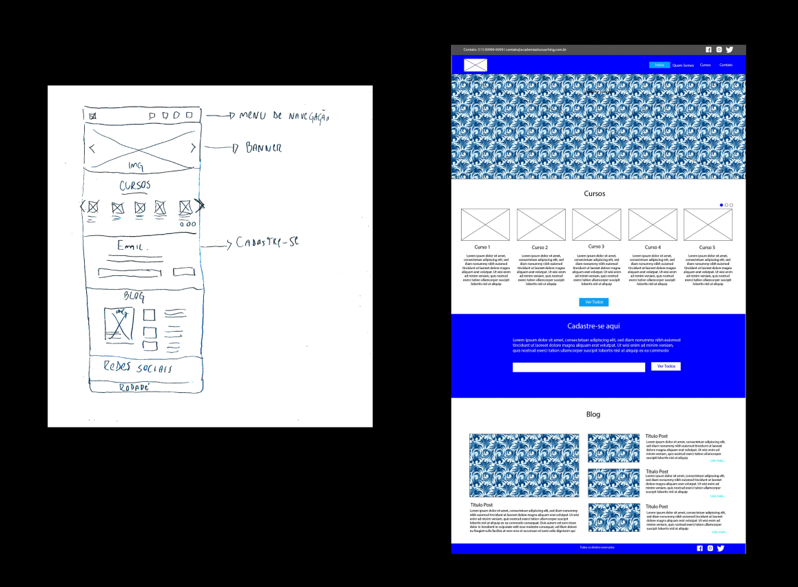
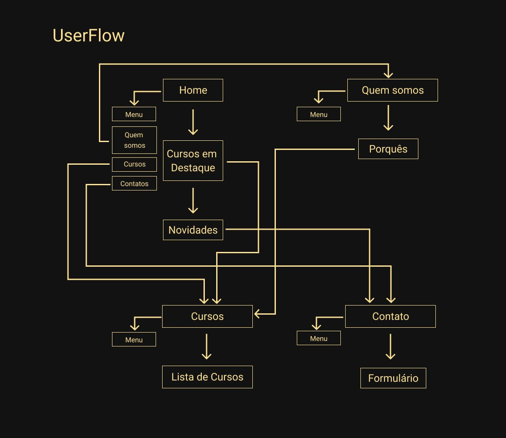
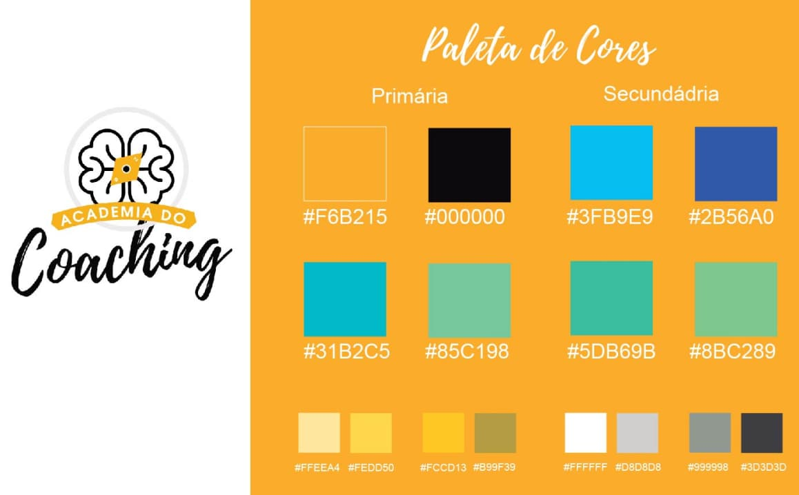
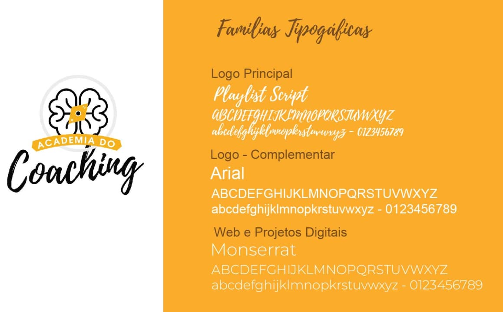
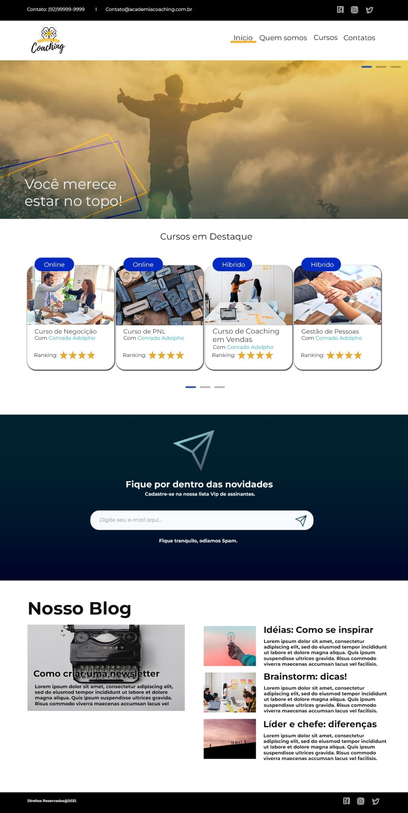
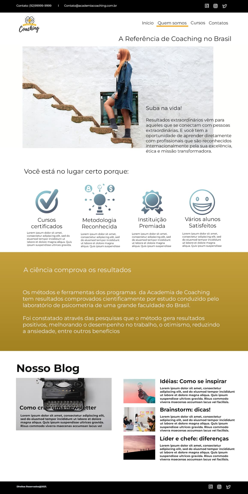
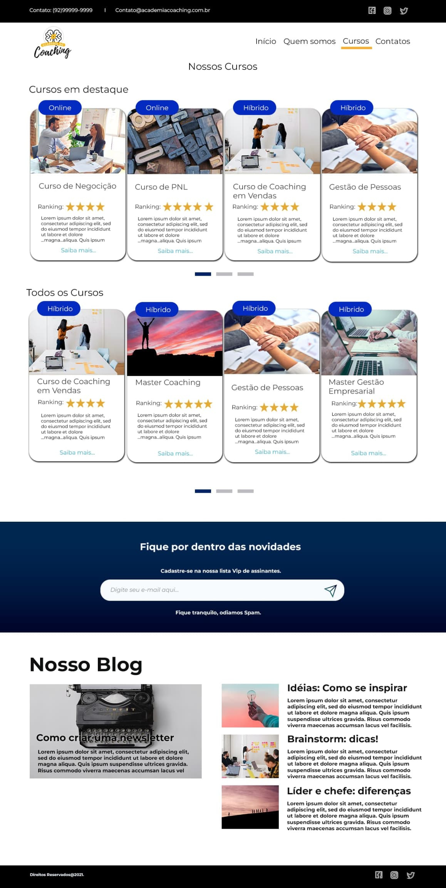

Academia Coaching
Dê uma olhada no Protótipo
O Projeto
É sobre a criação de um site institucional fictício que tem o objetivo de fornecer aulas de Coaching, Desenvolvimento Pessoal e Recursos Humanos e o site ajudaria a expandir o público deles, já que não possuíam um site, podendo desde vender cursos pela internet até fornecer cursos inteiramente online.
Método
Para o desenvolvimento, foi utilizado o método de Design Thinking, Double Diamond, onde são mapeados os processos divergentes e convergentes dentro do processo de design.

1 - Descobrir:
Foram feitas algumas pesquisas para entender melhor sobre o produto a ser desenvolvido, com um Briefing com o cliente e um Benchmark com a concorrência
2 - Definir:
Com os dados na mão, foi possível mapear o público alvo, utilizando a criação de um Storytelling, para ajudar na elaboração de uma persona. A identificação de Stakeholders também é um estudo que ajuda a definir os envolvidos no processo.
3 - Desenvolvimento:
No desenvolvimento, foram criados as primeiras ideias e wireframes de baixa e média fidelidade, para entender o que poderia ser desenvolvido para solucionar os problemas.
4 - Entrega:
Wireframes de alta fidelidade, protótipo e site foram desenvolvidos moldados às necessidades observadas.
Briefing
- 01. Qual o nome do site?
- Academia do Coaching
- 02. Ramo de atuação e tempo de mercado?
- Educação, Treinamentos e Cursos Online
- 03. Produtos e/ou serviços oferecidos?
- Consultoria, Cursos e treinamentos na área de Recursos Humanos, Coaching de Carreira, Oratória e Vendas.
- 04. Principais problemas que identifica no site atual.
- Não temos um site
- 05. Por que você está criando esse site? O que você espera realizar?
- Queremos aumentar nosso alcance e criar uma base de contatos na internet. Esperamos aumentar nossa receita mensal, e fechar mais contratos de treinamentos presenciais em todo o Brasil.
- 06. O que você está oferecendo a seu público?
- Treinamentos na área de recursos humanos, vendas, oratória e coaching de carreira, na modalidade presencial e online.
- 07. O que você quer que os usuários façam em seu site?
- Conheçam nossa empresa, entrem em contato com nossa equipe e comprem nossos cursos e consultorias.
- 08. Que tipo de site ele será? (Puramente promocional? Coletor de Informações? Uma publicação? Um ponto de venda?)
- Será uma porta de entrada para a empresa, nele queremos nos apresentar como solução. Coletaremos informações sobre os visitantes e venderemos nossos cursos.
- 09. Que recursos ele terá (Sistema de publicação? Animações flash? Sistema de e-commerce? Nenhum recurso adicional? Outro sistema? Se sim, especifique.)
- Queremos um sistema de gerenciamento de conteúdo, uma vitrine para nossos cursos, os produtos devem ser linkados para a pagina de vendas (checkout Hotmart e painel de cursos). Deverá ter um Slide na Home e vitrine de produtos e área de blog.
- 10. Quantas páginas o site deverá ter?
- Home, Quem Somos, Cursos e Treinamentos, Contatos
- 11. Quais são seus 4 principais concorrentes?
- 1- link: http://www.geronimo.com.br/ - 2- link: http://www.ibccoaching.com.br/ - 3- link: http://marianamorena.com.br/ - 4- link: https://www.udemy.com
- 12. Quem é seu Público-Alvo?
- Estudantes de Administração, Vendedores, Empreendedores, Gestores, e pessoas que buscam mudar de carreira.
- 13. Você está imaginando uma certa aparência para o site?
- Sim, gosto muito do site da Udemy. (Ver link 01 de concorrentes)
- 14. Você tem padrões existentes, como logos e cores, que devem ser incorporados?
- Sim tenho uma Logo e deve seguir os padrões de cores (Azul, Branco, Verde, Cinza). Obs: Não usar Vermelho ou Marron.
- 15. Quais são alguns outros sites da web que você gosta?
- 1 - Ibc coaching: http://www.ibccoaching.com.br - 2 - marianamorena: http://marianamorena.com.br
Público Alvo
Pessoas de 20 a 50 anos, estudantes ou formadas, principalmente em Administração de Empresas ou pessoas de outras formações interessadas em se tornarem referências em suas áreas.
Problema
Com base nas necessidades do cliente, foi possível entender um pouco melhor do público a ser atingido, dando abertura para a criação de uma pequena história para imaginar como é este usuário e entender suas dificuldades.
Era uma vez, uma pessoa, formada em administração, que gostaria de fazer algum curso na área de RH, para conseguir um trabalho melhor. Porém, ele não sabia onde pesquisar e foi perguntar por recomendações a amigos e a procurar na internet. Em uma de suas pesquisas, encontrou um site que tinha um curso que a interessou muito. Ela começou a fazer o curso e desde então usa o curso para estudar e recomenda para seus colegas de área.
Persona
Para conseguir desenvolver melhor o produto e entender melhor o público, foi elaborada uma persona.

Identificação de Stakeholders
Depois, foram identificados os stakeholders, ou seja, todos aqueles que seriam afetados pelo projeto. Investidores, professores, colaboradores, criadores de conteúdo, alunos, concorrência e as empresas que receberão profissionais mais bem qualificados.
O desenvolvimento do Projeto
O site foi pensado para ter no topo, um menu de navegação, seguido por um Banner, com uma imagem chamativa, com um resumo dos cursos mais vendidos abaixo, uma área para cadastro logo depois, um blog, uma área de redes sociais e um rodapé.
Com a evolução das ideias, a área de redes sociais, proposta inicialmente, desapareceu, sendo inclusa no topo e no rodapé.
Fluxo
A navegação do Site funciona como no esquema abaixo. Possui quatro telas principais, Página Inicial, Quem Somos, Cursos e Contato. A página possui um menu, onde se pode transitar por essas páginas. Na área de cursos, na página inicial, clicando em um dos cursos, você será direcionado para a página de Cursos e ao clicar em um curso você será direcionado para a Página de Contatos. a Página inicial possui uma área de cadastro de e-mail, que ao terminar o cadastro, recarrega a página inicial do site.
Cores e Tipografia
De acordo com o Briefing, o cliente (fictício) solicitou que não se usasse as cores Marrom e Vermelho, o que acabou terminando na escolha dessas cores.
O Layout
  